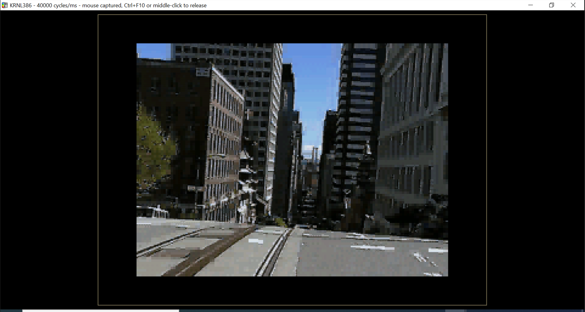

QuickTime for Windows permite reproducir archivos multimedia MOV utilizados por aplicaciones y videojuegos de Windows 3.x. Esta guía amplía el entorno portable de Windows 3.1 con QuickTime 2.1.2 de 16 bits, sin instalar componentes antiguos en el sistema anfitrión ni depender de ningún videojuego concreto.
Procedimiento basado en las pruebas realizadas por PC Game Archive el 28 de noviembre de 2026. Se validó una actualización desde QuickTime 2.03, la reproducción independiente de vídeo y su integración en una aplicación multimedia. La instalación limpia de 2.1.2 sin versión previa queda pendiente de una prueba específica.
1. Requisitos y entorno de referencia
| Componente | Configuración probada |
|---|---|
| Anfitrión | Windows 10 Pro 22H2 x64, build 19045 |
| Emulador | DOSBox Staging 0.83.0 (7b400) |
| Invitado | Windows 3.1 en español |
| Vídeo | S3 Trio64 emulada, controlador S3 964 v1.41B5, 640 × 480, 64K colores |
| Sonido | Sound Blaster 16, puerto 220h, IRQ 7, DMA 1, HDMA 5 |
| CPU | Núcleo normal, 40.000 ciclos |
| Memoria | 32 MB |
| Multimedia | QuickTime 2.1.2 para Windows de 16 bits |
Prepara primero el entorno portable de Windows 3.1. Trabaja sobre una copia independiente con el emulador cerrado y conserva el entorno antiguo aislado de Internet. No necesitas instalar el controlador Audio CD [MCI] únicamente para reproducir MOV.
2. Elección de la versión
QuickTime 2.03 puede estar incluido en el instalador de una aplicación de la época. En nuestra prueba terminó de instalarse correctamente, pero Movie Player no pudo abrir los vídeos. La actualización a 2.1.2 permitió reproducirlos sin modificar los archivos originales. Esto justifica la versión seleccionada en este entorno, no una incompatibilidad universal de 2.03.
No se conservó una captura del instalador de 2.1.2. Por rigor documental, esta guía no utiliza imágenes de la instalación de 2.03 como ilustraciones del procedimiento de actualización.
3. Instalación o actualización
- Cierra Windows y DOSBox. Guarda una copia íntegra de
drives\cen una ubicación nueva, fuera del entorno de trabajo. No sobrescribas un respaldo existente.
Para realizar el respaldo desde PowerShell, situado en la carpeta del emulador:
$destino = '..\backup_c_quicktime_203'
if (Test-Path -LiteralPath $destino) { throw 'El respaldo ya existe' }
Copy-Item -LiteralPath '.\drives\c' -Destination $destino -Recurse -ErrorAction Stop- Obtén QuickTime 2.1.2 para Windows 3.1, no QuickTime 32. El paquete utilizado procede del repositorio histórico de terceros WinWorld. Su autenticidad no fue comprobada independientemente; verifica el origen y examina los archivos antes de ejecutar software antiguo.
- Descomprime el paquete en
drives\c\QT212. La copia usada conteníaSetup\QTINSTAL.EXE, de 2.037.248 bytes. Verifica su SHA-256 desde PowerShell en la carpeta del emulador.
Get-FileHash -LiteralPath '.\drives\c\QT212\Setup\QTINSTAL.EXE' -Algorithm SHA256Para verificar también el tamaño:
(Get-Item -LiteralPath '.\drives\c\QT212\Setup\QTINSTAL.EXE').LengthHuella registrada del instalador probado:
FE56FC8E421DD186A8367BC5BA690DB4E54FF166E7A5E11AD777BD9FCCA5A836El hash identifica el ejemplar utilizado, no certifica por sí solo su autenticidad o seguridad. En esta prueba no fueron necesarios el complemento de navegador NPQTW16.DLL ni el componente adicional QuickTime VR QTVRW.QTC.
4. Ejecuta el instalador y verifica la versión
Inicia Windows. Desde el Administrador de programas, abre Archivo → Ejecutar e introduce:
C:\QT212\SETUP\QTINSTAL.EXEAcepta la eliminación de componentes de versiones anteriores si el instalador lo solicita, como indica README16.TXT del paquete. Finaliza y reinicia Windows. Verifica la versión desde Principal → Panel de control → QuickTime, no QuickTime 32. La documentación original del paquete indica este método de comprobación; no se conservó una captura de la versión en el panel durante la sesión de actualización.
5. Prueba independiente del programa
Ejecuta C:\WINDOWS\PLAYER.EXE desde Archivo → Ejecutar. En File → Open, selecciona un archivo MOV legítimo y conocido que sea compatible con esta versión. Pulsa reproducir y comprueba imagen, continuidad, sonido y sincronización. El vídeo original de prueba desde CD se reprodujo correctamente después de actualizar QuickTime, y también se validó la reproducción integrada en una aplicación.
Si no funciona, distingue una ruta errónea de un problema de lectura, formato o decodificación. Copiar temporalmente un vídeo al disco duro invitado y abrirlo desde allí permite comparar el comportamiento sin depender del CD. No cambies simultáneamente la versión de QuickTime, el controlador gráfico y los ciclos de CPU; conserva una copia del estado previo.
6. Diagnóstico de fallos de vídeo
Si una aplicación muestra una pantalla negra o no reproduce secuencias, abre primero un MOV conocido con Movie Player. La extensión no garantiza que el códec sea compatible. Comprueba la ruta y que el CD correcto esté montado. Si falla, copia un archivo de prueba al disco duro emulado y repite la apertura. Por ejemplo, desde DOS, reemplazando la ruta de origen por la real:
C:
MD C:\QTTEST
COPY D:\VIDEOS\PRUEBA.MOV C:\QTTEST\
WINEl nombre PRUEBA.MOV es ilustrativo; utiliza un archivo existente y de procedencia legítima. Abre la copia desde Movie Player. Si ambos intentos fallan, investiga QuickTime y el formato antes de modificar CPU o gráficos. Si solo falla desde CD, comprueba el montaje y la lectura. Si Movie Player funciona pero la aplicación no, investiga la integración específica.
| Prueba realizada | Resultado |
|---|---|
| QuickTime 2.03: apertura de dos MOV desde CD | Error |
| QuickTime 2.03: apertura de un MOV copiado al disco duro | Error |
| Aumento de ciclos y prueba del núcleo dinámico | Sin mejora significativa |
| QuickTime 2.1.2: reproducción del MOV original desde CD | Correcta |
| QuickTime 2.1.2: reproducción integrada en la aplicación | Correcta |
| Traslado del entorno completo a otra ubicación | Correcto en el mismo equipo |
Evidencia de funcionamiento tras la actualización
La siguiente captura corresponde a la aplicación multimedia utilizada en el laboratorio después de actualizar a QuickTime 2.1.2. Ilustra el resultado funcional, no la interfaz del instalador ni la pantalla de identificación de versión.

La causa interna exacta del fallo no se determinó. Consulta la guía específica de la aplicación para requisitos de códec, resolución y sonido. No conviertas ni sobrescribas los recursos originales como primera medida.
7. Conservación del entorno ampliado
Cierra Windows y DOSBox antes de copiar el entorno. Mantén una base Windows 3.1 sin QuickTime y una variante multimedia identificada con su versión. Conserva la configuración local del emulador, sus recursos y drives\c; usa rutas relativas y --noprimaryconf --conf dosbox.conf como en la guía base. Conserva las partidas y configuraciones de cada aplicación en copias separadas.
Si necesitas revertir la actualización, cierra el emulador, renombra la carpeta drives\c actual y restaura la copia previa en su ubicación original. No sobrescribas datos nuevos sin respaldarlos. La restauración no fue necesaria en esta sesión y no se probó de forma independiente.
8. Alcance y referencias
La actualización y reproducción se validaron en un único equipo Windows 10. No se ha comprobado esta instalación en Windows 11, otros equipos, todos los códecs ni todas las aplicaciones Windows 3.x. La salida MIDI Win32 depende del anfitrión. No se distribuyen Windows, QuickTime, archivos MOV de videojuegos ni imágenes ISO.
- Manual DOSBox Staging 0.83: Windows 3.1.
- Apple TN1074: resolución de problemas de instalación de QuickTime (copia histórica).
- Apple: correcciones de QuickTime 2.1.2 (copia histórica).
- WinWorld: QuickTime 2.x, repositorio de terceros utilizado.
- Documentación original del paquete: README16.TXT y PROBS16.TXT (11 de diciembre de 1996), centrada principalmente en el complemento de navegador. Evidencias y registro de compatibilidad de PC Game Archive, 28 de noviembre de 2026.